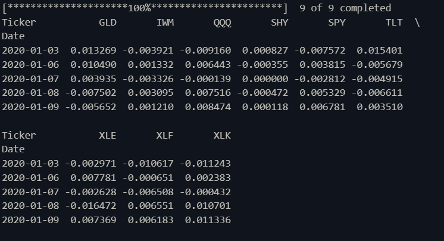
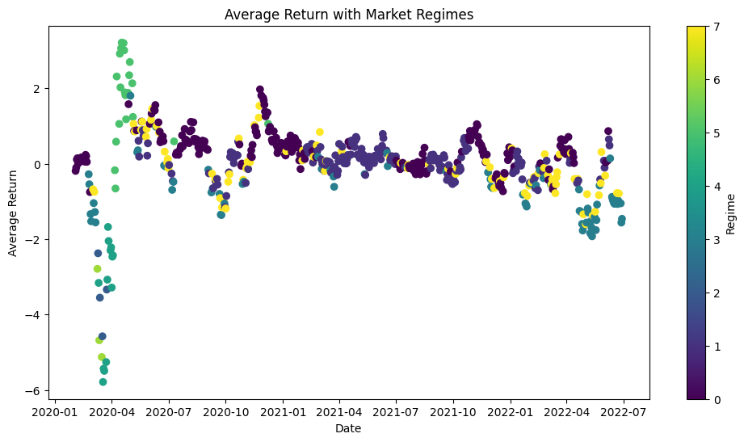
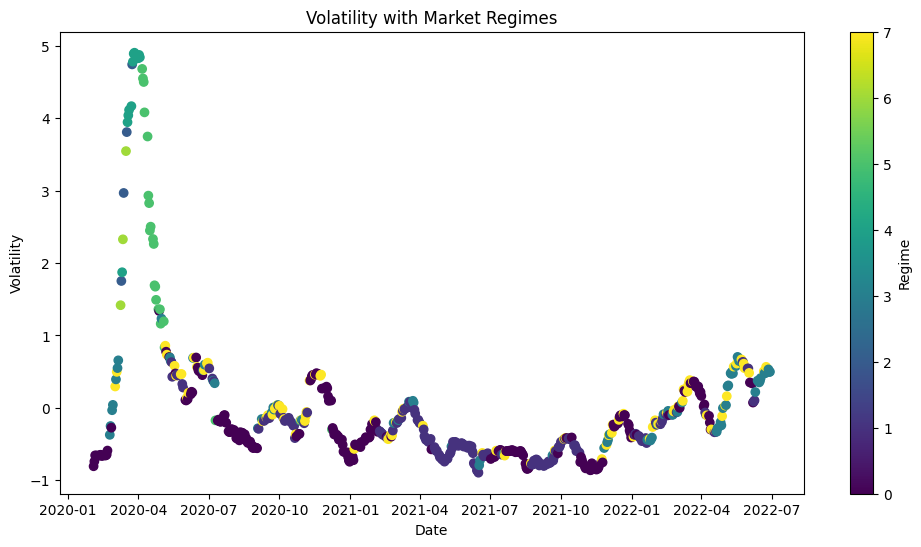
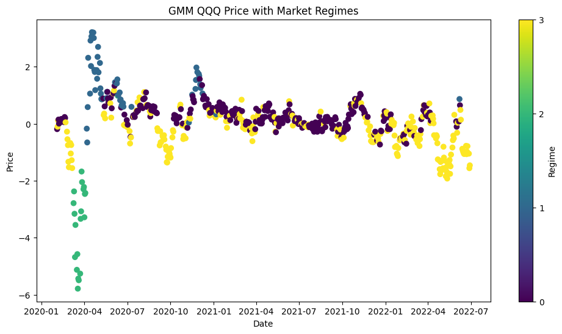
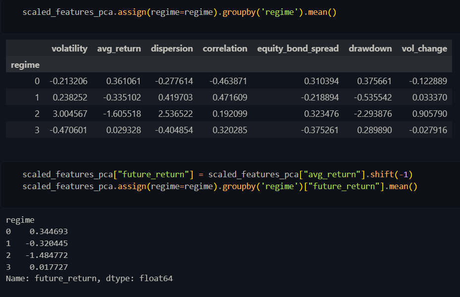
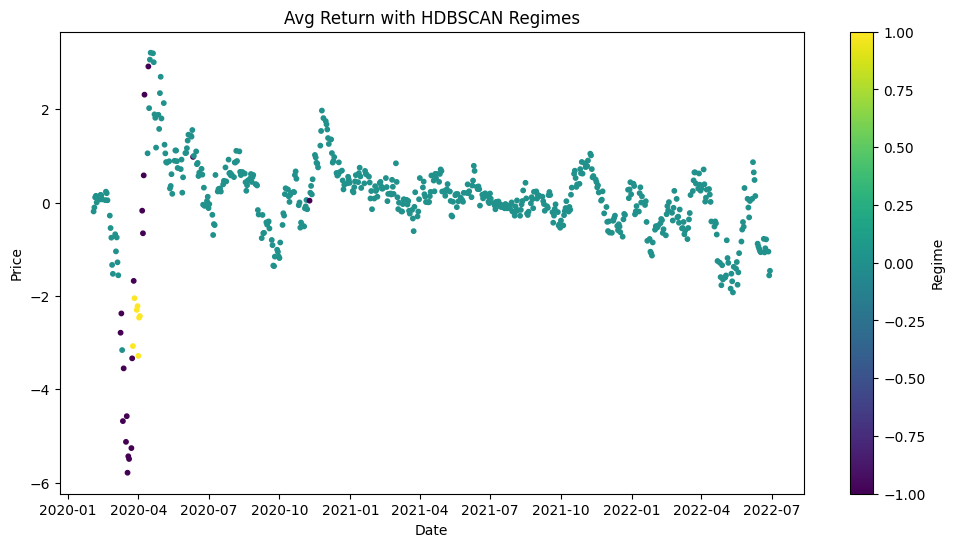
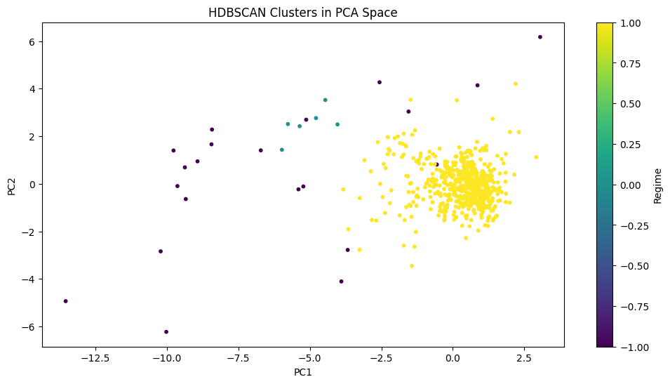
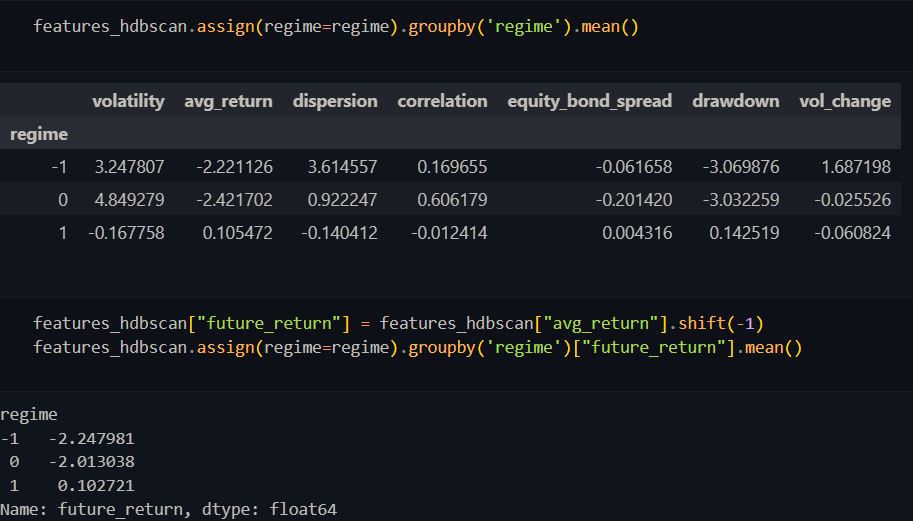

When using this tool within the terminal you can select which method to use for the analysis. Provide the necessary input data for time series given in the required format.
Output values from the end of the files will be displayed in the terminal. Specifcally future expected returns accross known market regimes following the analysis in the next day.

This preprocessed data is what we will use for the subsequent analysis. With key features extracting relevant information such as average returns and volatility.
The results of the K-Means clustering algorithm are displayed below.


The results of the Gaussian Mixture Model are displayed below.


The Gaussian Mixture Model is a probabilistic model that assumes all the data points are generated from a mixture of several Gaussian distributions. Additoinally identified the more likely market regimes based on the data as can be observed in the results.
The results of the HDBSCAN clustering algorithm are displayed below.



The HDBSCAN algorithm is a density-based clustering algorithm that can find clusters of varying shapes and sizes. It is particularly useful for identifying outliers and noise in the data.
By utilzing this algoritm the noise detected is within major shifts in the data such as the crisis of 2020 within the graphs.